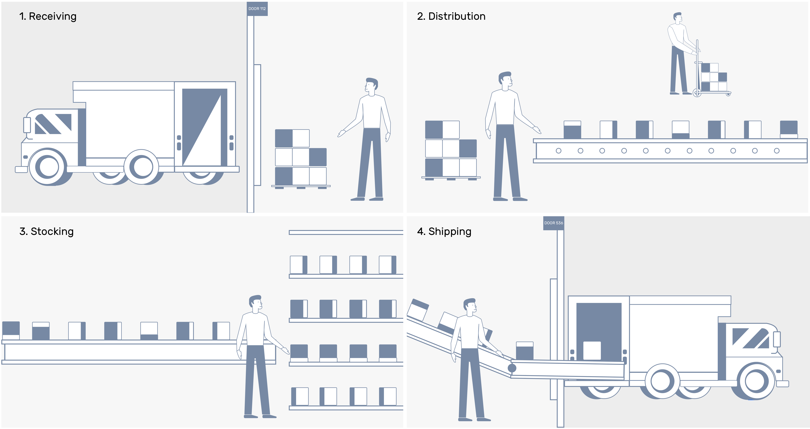
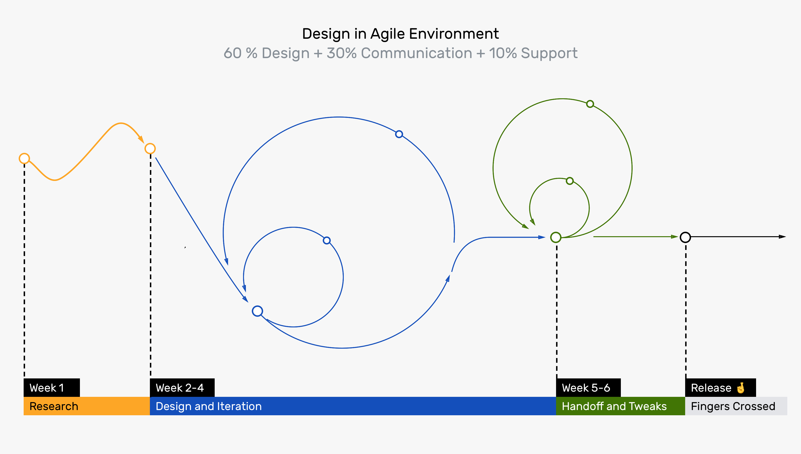
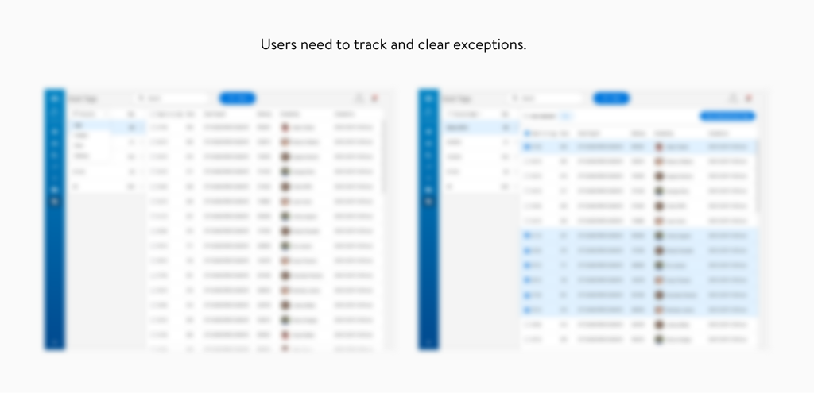
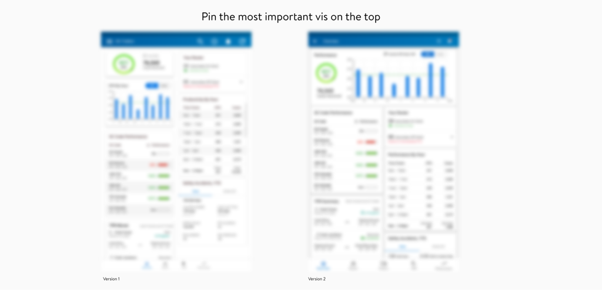

Pulse
About
Pulse is a live data dashboard app I have been working on at Walmart. It has been developed for more than two years and piloted in more than 40 Walmart RDCs. (RDC stands for Regional Distribution Centers). When I joined, the main goal of the product is to expand its business from one area to 10+ areas in Walmart RDCs.

My role
I support Pulse product growth by providing solutions through user interfaces. I translated product requirements into prototypes, and validate solutions by user testing. I designed in a Scrum Sprint process. Designs usually need to handoff two months ahead of the development cycle. I share my design update every week with my Product Manager and every two weeks with the dev team. This helps to bring the whole team into the discussion about edge cases, feasibility, and usability.

Due to Non-disclosure Agreement, I am not able to display detailed process and business content inside my portfolio. If you are interested to learn more about this project, please send me a message through LinkedIn: @Yingxiao Ouyang or Email: @ lunaatlgt@gmail.com.
Main Project 1
Use live data to track exceptions in Receiving areas
This is a two-month project including research, design, user testing, and final hand-off. As a result, Receiving Managers are empowered to find and clear exceptions. This reduces at least 10 clicks for every manager who oversees Receiving Areas, compared to the current solution.
The first thing that I think went well in this project is an old cliché. Users are always ahead of competitors. Doing user research helps to find new opportunities. In this project, our design request was only to track exceptions. But when we talk to managers, we found a huge pain point: Managers need a way to a clear exceptions. This finding guides us to design our solution. When we demo our solutions to leadership and end-users, it becomes an exciting epic feature they looked forward to.
The second thing that worked out is to design a responsive web page. While managers spend the majority of their time in offices, they also couch the associates carrying TC 70s. Design a data table in a small android device and a large desktop was hard. There are two main design considerations: 1. Make sure the tap areas are above 48px. Managers in Distribution Centers usually have "huge fingers" problems. It was hard for them to tab on buttons that request small and precise touch. Increasing the tab areas helps to prevent this problem. 2. Make sure the content in mobile is easily digestible. Mobile doesn't have real estate like the desktop to support a huge chunk of data in one screen. Thus we customized the data table, redesigned the search pattern, and added a middle page in the mobile version. These solutions help to keep the priority of main info and avoid long scrolls.
This project is a great memory for me. As one of my very first launched project, I turned my prior knowledge into practice and influenced our team. I remembered how surprised my PM was the first time I want to do a user review session. But after the first fruitful user review session, it became one of the routines for us.
Main Project 2
Visualize Shipping Area Workload
In this project, I designed a categorical vis to show a type of workload data for shipping areas. One of the interesting design challenges is how to select colors. As all the Distribution Centers are different, I need to map out them to avoid color conflicts. Although the Walmart Living Design system doesn't have a guide for such vis, it provides a color pallet with 300+ approved colors. It seems hard to select 10 colors from it to show different categories clearly.
I tackled this by a two-step approach: 1. Use Colorgorical.com to generate a reference pallet with 3 Walmart colors. I chose the highest perceptual distance, medium lightness, and the right color hue. This allows the vis to be clear, match the Pulse pallet lightness, and avoid alert colors. It also prevents us from randomly selecting within the 300+ colors. 2. Map the colors to Living Design System. This step helps us to maintains consistent visual language.
This is a great experience for me to find solutions to design with limits. While in school, we were taught to select colors merely based on perceptual distance; In this industry project, I need to make sure the design style is consistent with Walmart Brand.

Main Project 3
Tablet Exploration
In this project, I was redesigning Pulse tablet views. Before, Pulse was mainly designed for desktop (above 1024px) and mobile devices (360px). But in 2019, the business team decided to buy tablets for managers, which makes the view from 360px to 1024px a priority.
Here are two learnings from this process: 1. Tablets‘ information density is in the middle of desktop and mobile, with enough real estate to show enough info. But it is also crucial to keep information in a clean hierarchy in the tablets. I redesigned the placement of the dashboard to make sure users can grasp the key data at first glance. 2. Here is one possible pitfall when deciding tablet sizes. Some tablets can adjust resolutions in Settings, thus the size of a browser can be a scaled artboard size. When I found this problem, I collaborated with the dev team to verify the artboard size. To our surprise, while the spec told us the resolution is 800px * 1280px, the actual artboard is 602px * 936px. This makes the tablet we designed to fall into the category of small handheld device.
The outcome of this project helps to finalize the missing viewports of the responsive web. The designs are launched to 10+ pilot DCs in Walmart.
Summary
Involved in a 2-year-old project , I gradually understand that: it is not easy to design a product. I learned a lot from my team how to do user research, how to do hand-off document, and how to argue for a feature. Handoff is never the end of design. It is always the beginning of the next better version.